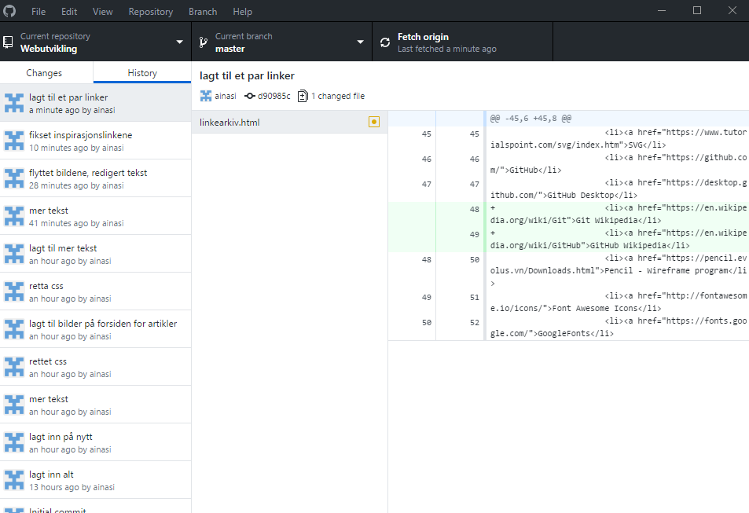

Git og Github
Git er et distribuert versjonskontrollsystem. Den holder oversikt over endringer som gjøres i koden. GitHub er et webbasert repository, altså selve lagringsdelen. Å bruke Git og GitHub er svært nyttig i arbeid med store oppgaver. Da har man hele tiden en oversikt over hvilke endringer som har blitt gjort, og man kan gå tilbake og gjenopprette tidligere versjoner. Dermed har man en backup hvis noe skulle skje, samtidig som man har en god oversikt over alt som har skjedd med koden. Det er spesielt fint å bruke når man samarbeider om en oppgave, siden man har oversikt over hva alle har endret.
Det finnes flere ulike Git-programmer, men jeg har valgt å bruke GitHub i denne oppgaven. På bildet nedenfor ser man hvordan strukturen blir når man gjør endringer.
Inne på Gitprogrammet har man en oversikt til venstrenover alt man har gjort. Der kan man se når man har gjort en endring i en av kodedokumentene under "changes". Når det dukker opp en endring kan man skrive en kommentar om hva man har endret og så commite endringene slik at det legger seg i historikken. Historikken inneholder derfor en liste med alle endringene som man har gjort. Etter man har commitet kan man trykke på push origin for å få endringene ut på GitHub på nettet (der det står Fetch origin nå). Til høyre har man en oversikt over koden, og man kan se hvilke linjer som har blitt endret etter hver commit.